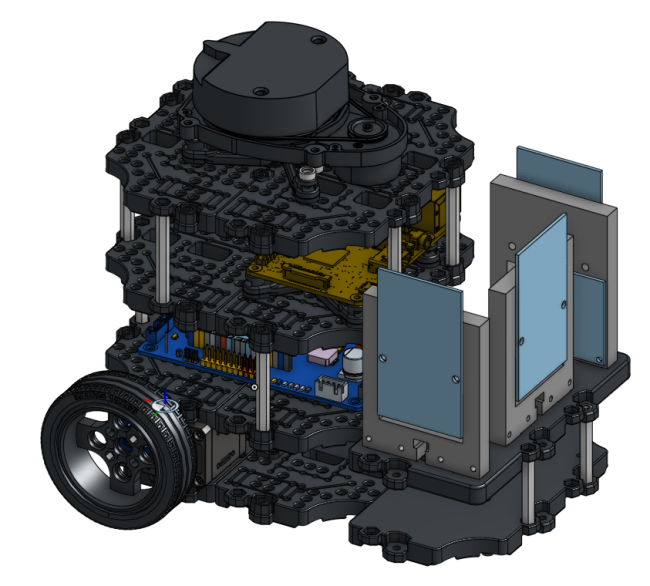

Project Goals V1.0
October 23, 2024
Current Project Goals
- [COMPLETED] Containerize Turtlebot3_bringup and RFID capture code
- Allow for easier development with docker images saved on server registry
- Containerize SLAM_TOOLBOX in VSCode dev container for easier development
- By doing this, I’ll have a backup image / baseline to work off of.
- Integrate RFID detection events into SLAM_Toolbox as landmarks
- RFID assembly I have from my undergrad outputs a detection event and a unique ID
- Simulate humanoid robot from existing resources in Gazebo
- Investigate gait algorithms
